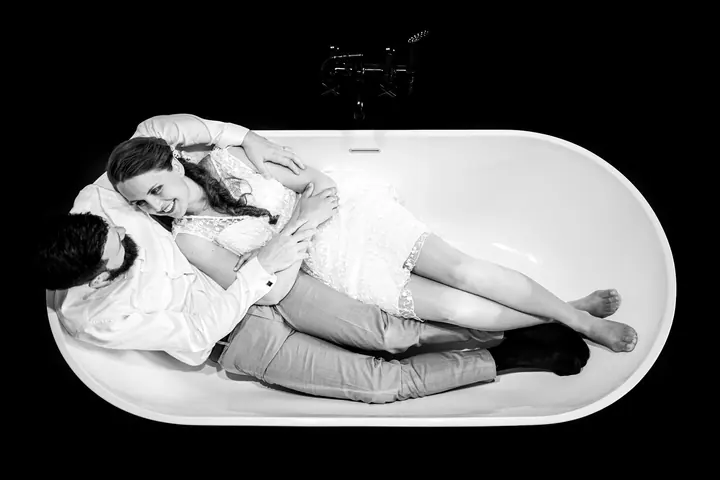
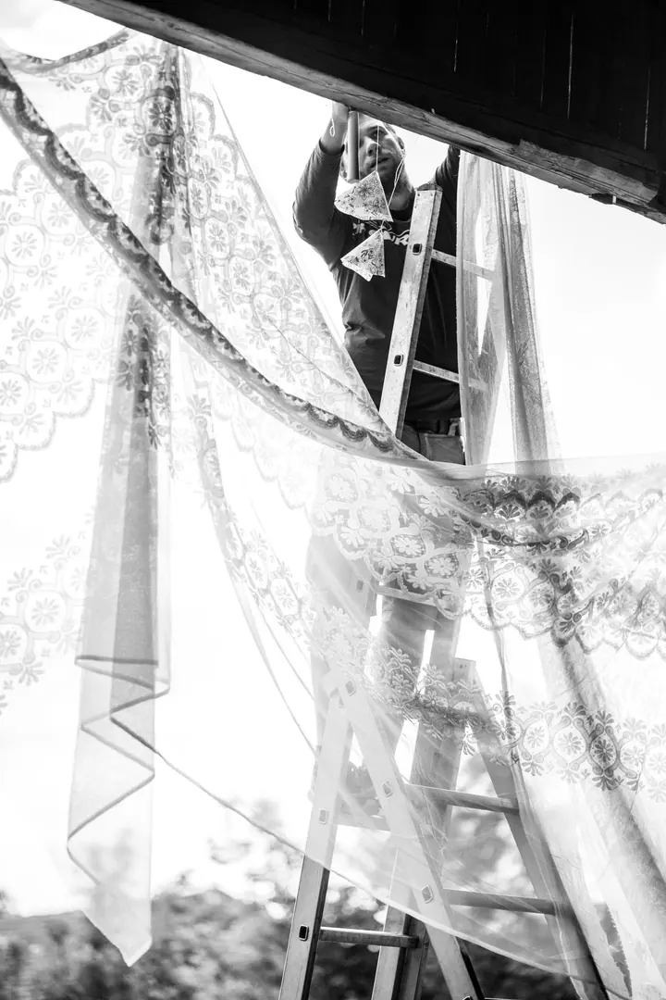

Svatební reportáž
Svatbu fotím jako reportáž, od ranních příprav až po večer. Nic nerežíruji. Jsem u toho a fotím, co se opravdu děje.

Svatební a reportážní fotograf
Jmenuji se Matouš Bárta a svatby fotím jako reportáž, bez režie a bez aranžování. Jsem u příprav, u obřadu i u chvil, kdy si nikdo nevšimne, že tam stojím. Na fotkách pak zůstane den, jaký opravdu byl.
Zeptat se na termín
Svatbu fotím jako reportáž, od ranních příprav až po večer. Nic nerežíruji. Jsem u toho a fotím, co se opravdu děje.
Občas se nechám přemluvit na dobrou reportáž. Když máte akci, která za to stojí, napište mi.
Čas od času vezmu i nějakou školu. Termín a podrobnosti spolu probereme e-mailem nebo po telefonu.
Když fotím, mám naprosto čistou mysl. Nevím, co se stane, jen vím, že jsem na místě, že jsem toho součástí a že to zachytím na fotky. Proto nic nearanžuji a nechávám věci plynout, od věšení krajek na stodolu až po trhání lučních květin do kytice.
Hodně fotím černobíle. Baví mě světlo, stín a obyčejné chvíle mezi lidmi, ze kterých se nakonec stane příběh celého dne.
Dnes se naplno věnuji umění. Z nalezených objektů tvořím originální předměty, které jsou sice neužitečné, ale vyjadřují můj pohled na svět. Fotím proto jen výjimečně. Pro ty, se kterými stále spolupracuji, se nic nemění, a když vás zajímá dobrá reportáž, klidně mi napište.
Pošlete mi e-mail na info@matousbarta.com nebo zavolejte. Napište, co chystáte a kdy.
Probereme, jak bude den vypadat a co je pro vás důležité. Pak se domluvíme, jestli to spolu zvládneme.
Jsem u toho a nic nerežíruji. Fotím to, co se opravdu děje, a vy se můžete věnovat svým hostům.
Fotky pečlivě vyberu a upravím. Pak vám je předám v podobě, na které se spolu domluvíme.
Fotím jen výjimečně, protože se teď naplno věnuji umění. Pokud si nejste jistí, napište mi a domluvíme se.
Reportážně, bez aranžování. Hodně fotím černobíle a zajímají mě skutečné chvíle, ne pózy.
Ano, občas se nechám přemluvit na dobrou reportáž nebo vezmu nějakou školu.
Napište na info@matousbarta.com nebo zavolejte na +420 775 267 819.